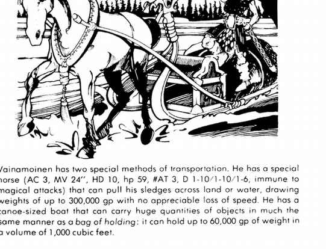

芬兰神话 · Finnish Mythos
芬兰神话的故事集中在民族史诗《卡勒瓦拉》。英雄比凡人强大，许多人拥有神圣祖先；卡勒瓦拉是善英雄之地，波赫约拉则是邪恶与巫术之地。诸英雄多为吟游诗人，以歌声施放强大魔法，诸神的牧师也常被视为超越凡人的存在。
伟树、魔法羊毛与铁耙
伟树的碎片可制成魔法箭或 +1 长矛；木材不能直接砍成武器，必须再行附魔。魔法羊毛擦过皮肤后每月可变出一群三十只羊。铁耙平时只有三英尺长，却能伸到两百码；它曾被用来从水下找回 Lemminkainen 的尸体，若知道大致位置，每次耙击有 10% 几率捞出指定物品。
维纳莫伊宁（英雄） · Väinämöinen
守序善良英雄，AC −4，移动 15 英寸，生命值 250；12 级牧师、20 级圣武士、12 级幻术师、23 级吟游诗人。年长而强壮，穿 +5 皮甲，交替使用 +5 战斧与会说话的 +3 锋锐剑；剑每日可施放一次恐惧术。他佩戴赋予力量 23 的云巨人腰带，拥有两把魔法弩：一把射击准确，另一把上弦后会自行攻击敌人，直到被制止。还能变形、驱散魔法并随意召唤怪物，免疫魅惑类法术与疾病。
他的特殊坐骑是一匹 AC 3、移动 24、10 HD、59 生命值的魔法马，可拉着雪橇在陆地或水面行进，载重 300,000 gp；他还有一艘独木舟大小的船，能像次元袋一样容纳 60,000 gp、体积 1,000 立方英尺的物品。
阿赫托（海与水之神） · Ahto
中立善良强大神，AC −2，生命值 324，移动 18／24／24 英寸；水中魔法抗性 100%，其他地方 50%，位于水元素位面。Ahto 能像 40 级施法者使用风水法术，手持 +4 镰刀造成 2–20 点伤害；以物品投入深水的方式接受献祭，并可召来水矮人。
水矮人与 · Water Dwarf 与 Ilmarinen
水矮人是 Ahto 的护卫，AC −2，生命值 99，移动 12 英寸，能以魔法弩攻击，靠近水体时每轮再生 5 点；若被杀，Ahto 有 25% 几率援助它，若任务中死亡，Ahto 必定出现。
Ilmarinen 是中立善良英雄，AC 0，生命值 167，5 级德鲁伊、15 级战士、9 级魔法师、15 级吟游诗人。他是能制造各类强大魔法物品的铁匠，穿 +4 皮甲，挥舞 +4 战锤；魔法雪橇可自行以 21 英寸速度穿越陆地或水面。
伊尔玛塔、基普蒂托 与 库勒沃 · Ilmatar、Kiputytto 与 Kullervo
Ilmatar 是守序善良弱等女神，AC 4，生命值 200，移动 12／24 英寸，魔法抗性 50%。她是 Väinämöinen 的母亲、风之女儿，拥有记载所有创世传说和法术的手掌大铜盒，并有能在陆地、空气与水中以 24 英寸移动的雪橇。
Kiputytto 是混乱邪恶半神，AC 2，生命值 189，移动 12／24 英寸；她能施放疾病使受害者每轮失去 5 点生命值，或使接触到的武器、盔甲、爪牙腐烂。她常隐形飘在战场上方，外形是黑皮肤、扭曲的老妇人。
Kullervo 是注定背叛卡勒瓦拉的混乱中立英雄，AC 1，生命值 119，19 级战士、8 级魔法师、10 级盗贼。他使用 +2 锋锐斧，能变形并免疫火焰；其悲剧命运最终把他推向邪恶。
勒明盖宁 与 蒂埃拉 · Lemminkainen 与 Tiera
Lemminkainen 是中立善良英雄，AC −2，生命值 149，8 级德鲁伊、18 级战士、10 级魔法师、15 级幻术师／吟游诗人。他轻率而爱冒险，能变形，免疫所有毒素，能化为熊或狼。他使用 +3 距离标枪、+3 动物杀手箭弓、+5 锋锐火焰剑、+3 匕首、云巨人力量腰带、+4 链甲和雪地速度靴。
Tiera 是 Lemminkainen 的盾卫，AC 4，生命值 66，移动 12 英寸；守序善良，9 级巡林客、5 级吟游诗人。他总会尽力援助主人，使用一柄 +3 长矛；有人在他面前说谎时，长矛会发光。

洛希、米耶利基 与 洛维阿塔 · Louhi、Mielikki 与 Loviatar
Louhi 是波赫约拉的邪恶老妇，守序邪恶，AC 8，生命值 110，魔法抗性 15%，10 级牧师、15 级魔法师／幻术师。她能召来四名隐形六级战士护卫自己，并以毒药和睡眠药剂消灭来客。
Mielikki 是中立善良自然女神，AC 4，生命值 322，移动无限，魔法抗性 50%；她守护森林、巡林客和树精，30 码内自动否定魅惑类法术，能召来狼群和鹰群。砍树者必须补种两棵树，否则会受到她的惩罚。
Loviatar 是守序邪恶痛苦半神，AC 2，生命值 227，移动 24／48 英寸，魔法抗性 25%；她的冰匕首令自己免疫魔法，并会让伤害她的人重新体验曾经承受过的最大痛苦。她的牧师侍奉疼痛，通常穿白衣。
波赫约拉之子与地下世界
波赫约拉之子 是守序邪恶英雄，AC 4，生命值 119，12 级战士、10 级幻术师、8 级刺客；+3 剑每击造成 2–20 加 6 点伤害，母亲赠予他的巨狼 AC 5、6 HD、40 生命值、免疫寒冷并服从命令。
Tuonetar 是混乱邪恶地下世界强大神，AC 6，生命值 340，魔法抗性 70%，来自潘德莫尼姆；30 英尺内的生物必须对她的恐惧 aura 作法术豁免，近身接触造成 4–40 点伤害。Surma 是中立邪恶死亡半神，AC −2，生命值 224，位于塔耳塔洛斯；+1 或更好武器才能命中，手杖造成 3–30 加 14 点伤害。Tuoni 是混乱中立（偏邪恶）强大神，AC −2，生命值 389，魔法抗性 64%，免疫魅惑、附魔与死亡法术；其手杖每击 3–30 点伤害，并会随机解除被击者的一件魔法物品。
乌科、温塔莫 与空中少女 · Ukko、Untamo 与空中少女
Ukko 是卡勒瓦拉至高神，守序善良强大神，AC −2，生命值 400，魔法抗性 85%，位于双天堂；20 级牧师、20 级圣武士、25 级魔法师、15 级吟游诗人。火焰剑造成 3–30 点伤害并有死亡术效果，豁免修正 −6；他掌管天空、空气、天气与生命，通常只在世界将被邪恶毁灭时亲自介入。
Untamo 是中立睡眠与梦境弱等神，AC 0，生命值 319，魔法抗性 25%，位于协调对立。十三小时未睡的生物无法伤害他；不通过法术豁免者会被他的棍击立刻催眠。空中少女 Air Maiden 是 Ukko 的战士，AC 5，85 生命值，移动 48 英寸，持 +3 霜刃；她一次只出现一人，任务完成或死亡后会消失并由另一人接替。